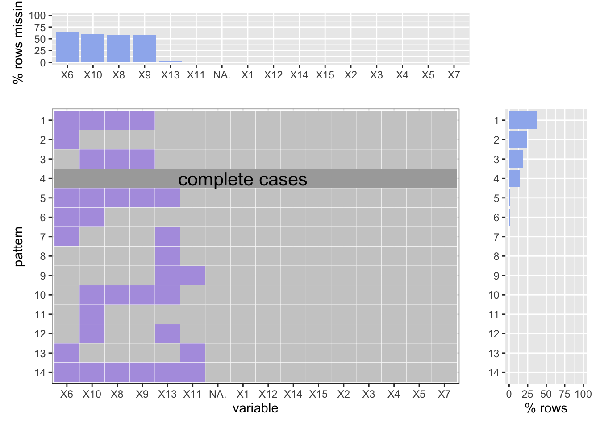

Chapter 2 Data sources
2.1 Missing Data Analysis
library(ggplot2)
library(tidyverse)
library(patchwork)
source("source/plot_missing.R")There are indeed a lot of missing data in our NYPD crime datasets. Here is a compreshensive missing data analyzing accross all the data set. Notice that, for some datasets, we have more than 1 billion rows. To simplified the first draft analysis, we always choose the first 50000 rows if the number of rows exceeds or equals to 50000, otherwise the whole dataset. Also, to keep track on our exploration targets, we choose to delete some of the unrelated variables. Beside, to make our graphs more readable, we have coded the original name of variables into integers. Specific coding rules will be explained during the analyzing below.
2.1.1 For shooting data (Historical):
shootings <- read.csv(file = 'data/NYPD_Shooting_Incident_Data__Historic_.csv')Here is our “shooting incident (historical)” dataset. The original dataset contains 19 variables and 23568 observations. To simplify our analysis, we have figured that variables named “JURISDICTION_CODE”,“X_COORD_CD”, “Y_COORD_CD”, “Lon_Lat” are not necessary. So we deleted them. As shown below, according to the order in the data frame, we coded the variables from 1 to 15.
shootings[shootings==""]<-NA
shootings[shootings=="UNKNOWN"]<-NA
drops <- c("JURISDICTION_CODE","X_COORD_CD", "Y_COORD_CD", "Lon_Lat")
shootings <- shootings[ , !(names(shootings) %in% drops)]
colnames(shootings) <- c("1", "2", "3", "4", "5", "6", "7", "8", "9", "10", "11",
"12", "13", "14", "15")plot_missing(shootings, percent = TRUE)As one can see, the variables except x6, x8, x9, x10 are all completed. What noticealbe is that the x6 variable (LOCATION_DESC) has a missing rate almost 30%. And 25% of all the cases are recorded completed. Beside, the age group, sex, and race of crininals are often missed (x8, x9, and x10), especially the ages, almost 40% of missing data are related to ages.
2.1.2 For shooting data (YTD):
Here is our “shooting incident (YTD)” dataset. The original dataset contains 19 variables and 902 observations. To simplify our analysis, we have figured that variables named “JURISDICTION_CODE”,“X_COORD_CD”, “Y_COORD_CD”, “Lon_Lat” are not necessary. So we deleted them. As shown below, according to the order in the data frame, we coded the variables from 1 to 15.
shootings <- read.csv(file = 'data/NYPD_Shooting_Incident_Data__Year_To_Date_.csv')shootings[shootings==""]<-NA
shootings[shootings=="UNKNOWN"]<-NA
drops <- c("JURISDICTION_CODE","X_COORD_CD", "Y_COORD_CD", "Lon_Lat")
shootings <- shootings[ , !(names(shootings) %in% drops)]
colnames(shootings) <- c("1", "2", "3", "4", "5", "6", "7", "8", "9", "10", "11",
"12", "13", "14", "15")plot_missing(shootings, percent = TRUE)As one can see, there are only 4 vairables are missed: location, age group, sex, and race. Similarly to the historical data, the identification of the cirminals (age, sex, race) are often missed. However, we still have about 15% of all the data are complete. Besides, over 55% percent of missing data are because of age, sex, and race of the cirminals. Which may indicates that the shooting crime criminals are very hard to identificate.
2.1.3 For Hata Crimes:
Here is our “hate crimes” dataset. The original dataset contains 14 variables and 1704 observations. To simplify our analysis, we have figured that variables named “JURISDICTION_CODE”,“X_COORD_CD”, “Y_COORD_CD”, “Lon_Lat”, “Arrest.Id”, “Complaint.Precinct.Code”, “Arrest.Date”, “Full.Complaint.ID” are not necessary. So we deleted them. As shown below, according to the order in the data frame, we coded the variables from 1 to 10.
hates <- read.csv(file = 'data/NYPD_Hate_Crimes.csv')hates[hates==""]<-NA
hates[hates=="UNKNOWN"]<-NA
drops <- c("JURISDICTION_CODE","X_COORD_CD", "Y_COORD_CD", "Lon_Lat", "Arrest.Id",
"Complaint.Precinct.Code", "Arrest.Date", "Full.Complaint.ID")
hates <- hates[ , !(names(hates) %in% drops)]
#str(hates)
colnames(hates) <- c("1", "2", "3", "4", "5", "6", "7", "8", "9", "10")
#str(shootings)plot_missing(hates, percent = TRUE)It is very impressive to find out that the hate crime data are all completes cases. Nothing was missed according to the rocords of NYPD.
2.1.4 For crime court summons (Historical):
Here is our “crime court summons (historical)” dataset. The original dataset contains 17 variables and 50000 observations. To simplify our analysis, we have figured that variables named “JURISDICTION_CODE”,“X_COORDINATE_CD”, “Y_COORDINATE_CD”, “Lon_Lat”, “PRECINCT_OF_OCCUR”, “SUMMONS_KEY” are not necessary. So we deleted them. As shown below, according to the order in the data frame, we coded the variables from 1 to 12.
summons <- read.csv(file = 'data/NYPD_Criminal_Court_Summons__Historic_.csv', nrows=50000)summons[summons==""]<-NA
summons[summons=="UNKNOWN"]<-NA
drops <- c("JURISDICTION_CODE","X_COORDINATE_CD ", "Y_COORDINATE_CD", "Lon_Lat",
"PRECINCT_OF_OCCUR", "SUMMONS_KEY")
summons <- summons[ , !(names(summons) %in% drops)]
colnames(summons) <- c("1", "2", "3", "4", "5", "6", "7", "8", "9", "10", "11", "12")plot_missing(summons, percent = TRUE)
As one can see, there are 6 out of 12 variables can be missing in our historical cour summons datasets, which is x4 to x9, which is LAW_DESCRIPTION, SUMMONS_CATEGORY_TYPE, AGE_GROUP, SEX, RACE, and BORO. What important is, we still have 35% of observations are completed. Law description missing are often related with summons category missing, which combined leads to 25% percent of the missing cases. What’s more, similar to our anlysis in the shooting crimes, it is also hard to identify the criminals by age, sex, and race, which combined leads to 38% of missing. Other missing are very small in number.
2.1.5 For crime court summons (YTD):
Here is our “crime court summons (YTD)” dataset. The original dataset contains 17 variables and 25691 observations. To simplify our analysis, we have figured that variables named “JURISDICTION_CODE”,“X_COORDINATE_CD”, “Y_COORDINATE_CD”, “Lon_Lat”, “PRECINCT_OF_OCCUR”, “SUMMONS_KEY” are not necessary. So we deleted them. As shown below, according to the order in the data frame, we coded the variables from 1 to 12.
summons <- read.csv(file = 'data/NYPD_Criminal_Court_Summons_Incident_Level_Data__Year_To_Date_.csv')summons[summons==""]<-NA
summons[summons=="UNKNOWN"]<-NA
drops <- c("JURISDICTION_CODE","X_COORDINATE_CD ", "Y_COORDINATE_CD", "Lon_Lat",
"PRECINCT_OF_OCCUR", "SUMMONS_KEY")
summons <- summons[ , !(names(summons) %in% drops)]
colnames(summons) <- c("1", "2", "3", "4", "5", "6", "7", "8", "9", "10", "11", "12")plot_missing(summons, percent = TRUE)
This data set is not ideal. As one can percieve, there are only 4 variables out of 12 are complete. Good news is, we still got 25% percent of data are complete. Besides, the missin are mainly from 2 kinds: one is the missing of age, sex, and race; the other is from law description and summon type. This pattern is similar to the historical data.
2.1.6 For Motor Vehicle Collisions and Crahses (Historical):
Here is our “crime court summons (YTD)” dataset. The original dataset contains 29 variables and 50000 observations. To simplify our analysis, we have figured that variables named “COLLISION_ID”, “LOCATION”, “ZIP.CODE”, “CONTRIBUTING.FACTOR.VEHICLE.1”, “CONTRIBUTING.FACTOR.VEHICLE.2”, “CONTRIBUTING.FACTOR.VEHICLE.3”, “CONTRIBUTING.FACTOR.VEHICLE.4”, “CONTRIBUTING.FACTOR.VEHICLE.5”, “VEHICLE.TYPE.CODE.1”, “VEHICLE.TYPE.CODE.2”, “VEHICLE.TYPE.CODE.3”, “VEHICLE.TYPE.CODE.4”, “VEHICLE.TYPE.CODE.5” are not necessary. So we deleted them. As shown below, according to the order in the data frame, we coded the variables from 1 to 16.
motors <- read.csv(file = 'data/Motor_Vehicle_Collisions_-_Crashes.csv', nrows=50000)motors[motors==""]<-NA
motors[motors=="UNKNOWN"]<-NA
drops <- c("COLLISION_ID", "LOCATION", "ZIP.CODE", "CONTRIBUTING.FACTOR.VEHICLE.1",
"CONTRIBUTING.FACTOR.VEHICLE.2", "CONTRIBUTING.FACTOR.VEHICLE.3",
"CONTRIBUTING.FACTOR.VEHICLE.4", "CONTRIBUTING.FACTOR.VEHICLE.5",
"VEHICLE.TYPE.CODE.1", "VEHICLE.TYPE.CODE.2", "VEHICLE.TYPE.CODE.3",
"VEHICLE.TYPE.CODE.4", "VEHICLE.TYPE.CODE.5")
motors <- motors[ , !(names(motors) %in% drops)]
colnames(motors) <- c("1", "2", "3", "4", "5", "6", "7", "8", "9", "10", "11",
"12", "13", "14", "15", "16")plot_missing(motors, percent = TRUE)
It is weird that almost all missing data are related to the missing of location information, which is x8, x7, and x3, which are borough, on-street name, and out-street name. This pattern may indicates that in our motor collisions and curshed datasets, it can be difficult to locate the criminals, which may also shows that there is a tendency to run away after curshed in NYC.
2.1.7 For arrest (Historical):
Here is our “crime court summons (YTD)” dataset. The original dataset contains 19 variables and 50000 observations. To simplify our analysis, we have figured that variables named “JURISDICTION_CODE”,“X_COORD_CD”, “Y_COORD_CD”, “Lon_Lat” are not necessary. So we deleted them. As shown below, according to the order in the data frame, we coded the variables from 1 to 15.
arrests <- read.csv(file = 'data/NYPD_Arrests_Data__Historic_.csv', nrows=50000)arrests[arrests==""]<-NA
drops <- c("JURISDICTION_CODE","X_COORD_CD", "Y_COORD_CD", "Lon_Lat")
arrests <- arrests[ , !(names(arrests) %in% drops)]
colnames(arrests) <- c("1", "2", "3", "4", "5", "6", "7", "8", "9", "10", "11",
"12", "13", "14", "15")plot_missing(arrests, percent = TRUE)
Our arrests datasets are very friendly for analysts. Almost all the cases are complete.
2.1.8 For arrest (YTD):
Here is our “crime court summons (YTD)” dataset. The original dataset contains 19 variables and 74243 observations. To simplify our analysis, we have figured that variables named “JURISDICTION_CODE”,“X_COORD_CD”, “Y_COORD_CD”, “Lon_Lat”, “New.Georeferenced.Column” are not necessary. So we deleted them. As shown below, according to the order in the data frame, we coded the variables from 1 to 15.
arrests <- read.csv(file = 'data/NYPD_Arrest_Data__Year_to_Date_.csv')arrests[arrests==""]<-NA
drops <- c("JURISDICTION_CODE","X_COORD_CD", "Y_COORD_CD", "Lon_Lat", "New.Georeferenced.Column")
arrests <- arrests[ , !(names(arrests) %in% drops)]
colnames(arrests) <- c("1", "2", "3", "4", "5", "6", "7", "8", "9", "10", "11",
"12", "13", "14", "15")plot_missing(arrests, percent = TRUE)Just like the historical datasets, the YTD datasets are almost complete.